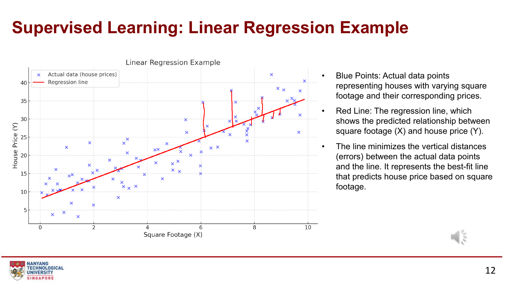
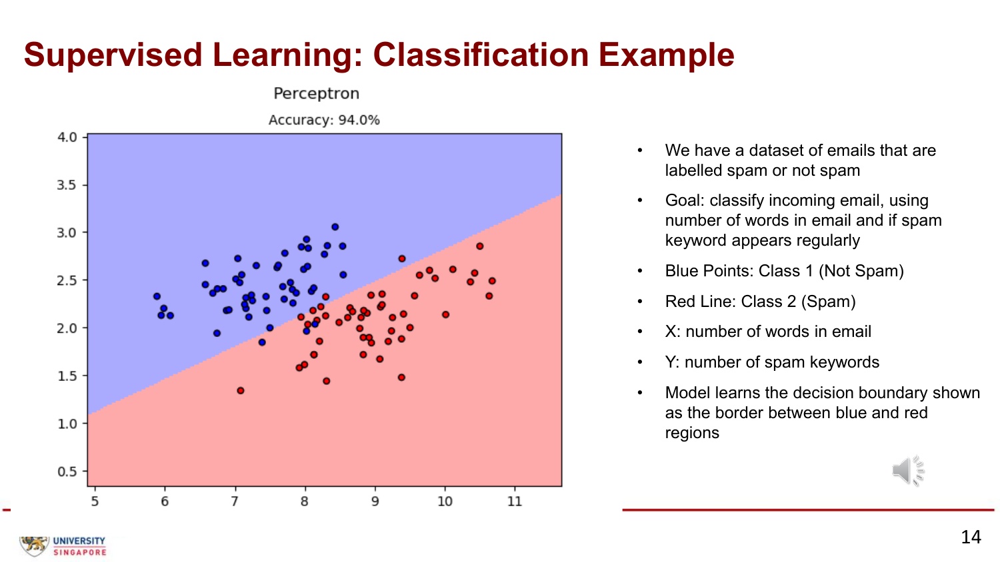
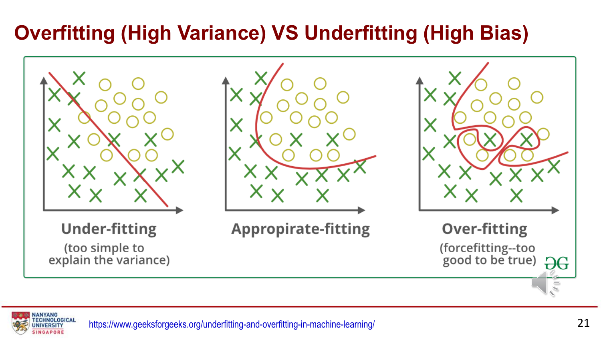
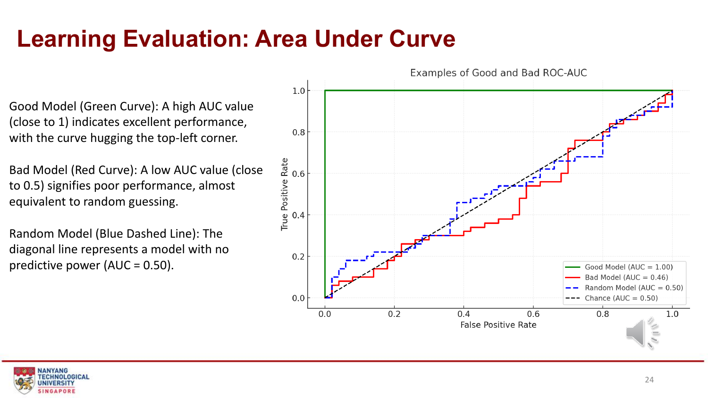

第一周：监督与无监督学习
机器学习分三种：监督（有答案）、无监督（没答案）、强化（只有奖励，第二周讲）。本周讲前两种：回归和分类怎么做、怎么判断模型好不好，再用 Moderna 案例讨论 AI 的价值从哪里来。
What is AI / ML and Data Science?｜三种机器学习
本章图表 / 方法：数据科学与 AI 的关系；机器学习算法分类树；机器学习应用思维导图（第 5–8 页）。
数据科学是用数据创造价值和洞察的交叉学科，和 AI、ML、深度学习有重叠。产出可以是预测模型，也可以是仪表板或报告。AI 项目必须结合领域知识。监督 / 无监督学习是数据科学的基础。
| 监督学习 | 无监督学习 | 强化学习 | |
|---|---|---|---|
| 数据 | 有标签（已知答案 Y） | 没有标签 | 没有标签，只有奖励 / 惩罚 |
| 子任务 | 回归（预测数值）、分类（预测类别） | 聚类、关联、降维 | 学最优策略 |
| 课件算法 | 回归、决策树、随机森林；分类：KNN、Trees、Logistic Regression、Naive Bayes、SVM | 聚类：SVD、PCA、K-means；关联：Apriori、FP-Growth；Hidden Markov Model | 第二周 |
| 应用例子 | 回归：天气预报、市场预测、人口增长、寿命估计；分类：图像分类、身份欺诈、客户留存、诊断 | 聚类：精准营销、客户分群、推荐系统；降维：大数据可视化、结构发现 | 游戏 AI、机器人导航、实时决策、技能学习 |
易错：课件把 PCA、SVD 放在 clustering 下面，考试按课件答。另外 Logistic Regression 名字带“回归”，但做的是分类。
Supervised Learning｜从 X 学到 Y
本章图表 / 方法：监督学习例子表（email → spam 等）；金融欺诈的合成标签（第 9–10、15 页）。
一句话：数据有特征 X 和已知的目标 Y（ground truth），模型学 X → Y 的关系，找到“最佳拟合”。
| 输入 X | 输出 Y | 应用 |
|---|---|---|
| spam?（0/1） | 垃圾邮件过滤 | |
| audio | 文字稿 | 语音识别 |
| English | Spanish | 机器翻译 |
| 广告、用户信息 | click?（0/1） | 在线广告 |
| 图像、雷达 | 其他车辆位置 | 自动驾驶 |
| 手机照片 | defect?（0/1） | 外观检测 |
标签很少怎么办：金融欺诈例子（第 15 页）
确认的欺诈样本很少，很难直接训练。但领域专家已有一套经过审批的欺诈识别规则，可以用它产生合成标签（synthetic labels）和初始特征，作为训练起点。课件说这体现了 intuition 在 AI 中的重要性。
第 20 页讨论题：数据很多但只有少量标注，怎么办？可以答：主动学习（优先标注最有价值的样本）、半监督学习（少量标签 + 大量无标签数据）、迁移学习、用规则产生弱标签。
Linear Regression｜最佳拟合直线
本章图表 / 方法：房价与面积散点图和回归线；线性回归数学模型与代价函数（第 11–12、16 页）。


- 模型：
f(x) = wx + b。w 是斜率，b 是 y 截距。X 是自变量（如面积），Y 是因变量（房价）。 - 代价函数：J(w, b) = 平均平方误差。目标是找到让 J 最小的 w 和 b。
- 怎么找：梯度下降（第三周细讲）。
算一个：面积 x = 80，w = 3，b = 20 → 预测 260。真实 280，误差 20，平方误差 400。三个样本预测 [170, 260, 320]、真实 [180, 280, 300]：误差 10、20、−20，MSE = (100 + 400 + 400) / 3 = 300，RMSE ≈ 17.3。
MSE 有两种写法：(1/m)Σ误差² 或 (1/2m)Σ误差²。后者多一个 ½ 方便求导，最小值的位置不变。考试问 MSE 就除以 m。
Logistic Regression & Classification｜用概率做分类
本章图表 / 方法：Sigmoid 函数与 0.5 阈值；垃圾邮件分类决策边界（第 13–14 页）。
三步：① 算线性分数 z = wx + b → ② 用 sigmoid 压到 0–1：σ(z) = 1 / (1 + e⁻ᶻ) → ③ 阈值 0.5：大于 0.5 判为 1，否则为 0。
| z | −2 | −1 | 0 | 1 | 2 |
|---|---|---|---|---|---|
| σ(z) | 0.12 | 0.27 | 0.5 | 0.73 | 0.88 |
| 类别 | 0 | 0 | 边界 | 1 | 1 |


调阈值：阈值调低 → 判为正类的更多 → recall 上升、precision 下降；调高则相反。垃圾邮件怕误伤正常邮件，阈值偏高；癌症筛查怕漏诊，阈值偏低。
Unsupervised Learning｜没有答案时找结构
本章图表 / 方法：三个簇的分组示意；客户分群四类参数；监督与无监督对比（第 17–19 页）。
一句话：只有 X 没有 Y，算法自己找模式和分组。适合把大量数据组织成簇、发现以前没注意到的模式、找出有用的特征。
客户分群（第 18 页）
目的：做个性化营销、制定定价策略。主要用聚类算法。四类分群参数：
| 类型 | 例子 |
|---|---|
| Geographic 地理 | 国家、城市、邮编 |
| Demographic 人口统计 | 年龄、性别、收入、职业 |
| Behavioral 行为 | 买过什么、消费高峰、购买时间 |
| Psychological 心理 | 性格、态度、信念 |
监督 vs 无监督（第 19 页）
| 监督 | 无监督 | |
|---|---|---|
| 数据 | 标注好的数据，目标输出已知 | 无标签数据 |
| 反馈 | 有反馈机制 | 没有 |
| 细分 | 分类（输出是类别）、回归（输出是连续值） | 聚类、关联 |
| 应用 | 垃圾邮件、房价 | 购物篮分析、语义聚类、推荐系统 |
Overfitting vs Underfitting｜拟合得刚刚好
本章图表 / 方法：欠拟合、适度拟合、过拟合三图对比；scikit-learn 算法选择流程图（第 21–22 页）。


| 欠拟合 Underfitting | 过拟合 Overfitting | |
|---|---|---|
| 别名 | High bias | High variance |
| 表现 | 训练集和验证集都差 | 训练集很好，验证集差很多 |
| 原因 | 模型太简单，解释不了数据的变化 | 模型把训练数据的噪声也记住了 |
| 对策 | 更复杂的模型、更多 / 更好的特征、训练更久 | 正则化（Dropout、L2）、early stopping、更多数据、简化模型 |
scikit-learn 流程图（第 22 页）：样本 < 50 → 先去找更多数据；有标签且预测类别 → 分类；有标签且预测数量 → 回归；没有标签、知道类别数 → 聚类（如 KMeans）；只是看看 → 降维。
Learning Evaluation｜怎么判断模型好不好
本章图表 / 方法：训练 / 验证 / 测试划分、K-fold、混淆矩阵、ROC 曲线与 AUC（第 23–24 页）。
| 集合 | 用途 |
|---|---|
| Train | 训练模型（学参数） |
| Validation | 调超参数、选模型、选阈值 |
| Test | 最后评估一次，看泛化能力 |
K-fold 交叉验证：数据分成 k 份，训练和验证 k 次，每次换一份做验证。评估更稳健，也能发现过拟合。例：1,000 条、5-fold → 每轮 800 训练、200 验证。
混淆矩阵与指标
| 预测 0 | 预测 1 | |
|---|---|---|
| 真实 0 | TN | FP（误报） |
| 真实 1 | FN（漏报） | TP |
| 指标 | 公式 | 回答 |
|---|---|---|
| Accuracy | (TP + TN) / 总数 | 整体猜对多少 |
| Precision | TP / (TP + FP) | 判为正的里面，有多少真是正的（准不准） |
| Recall（TPR） | TP / (TP + FN) | 真正例里，抓到多少（全不全） |
| F1 | 2PR / (P + R) | 两者都高时才高 |
| FPR | FP / (FP + TN) | 真负例里被误报的比例 |
算一个：TN = 80、FP = 10、FN = 5、TP = 5。Accuracy = 85/100 = 85%，看着不错；但 precision = 5/15 ≈ 33%，recall = 5/10 = 50%，F1 = 40%。类别不平衡时 accuracy 会骗人。


- ROC 曲线：改变阈值，把每个阈值下的（FPR, TPR）连起来。
- AUC：曲线下面积。接近 1 好，0.5 等于瞎猜，低于 0.5 说明预测反了。AUC 不受某一个阈值影响。
from sklearn.metrics import confusion_matrix, precision_score, recall_score, f1_score, roc_auc_score
confusion_matrix(y_true, y_pred) # 行是真实，列是预测
roc_auc_score(y_true, y_prob) # 要传概率，不是 0/1 预测Class 1 Case｜Moderna: Democratizing AI
本章图表 / 方法：案例简报 5 页：背景、五层结构、四档做法、五个价值来源、讨论题与小组表格。
背景：Moderna 约 6,000 人，要和 10 万人以上的药企竞争，目标三年 10 个新药获批。CEO 说它是“碰巧做生物的科技公司”，赌的是 AI 让 6,000 人跑赢 10 万人。
- 2023 年 4 月：Samsung 工程师把源代码泄露到公开 ChatGPT。Moderna 风险更大（研究数据、临床试验志愿者病历），而且员工已经在自行使用。
- 2023 年 5 月：Replace, don't ban。两周内用 OpenAI API 做出内部 mChat，公司数据不会被拿去训练模型。（其他药企直接禁用；Samsung 的泄露发生在它解禁后 20 天。）
- 推广：prompt 大赛（180+ 作品）、内部 AI Academy、高管 8 周培训。
- 2024 年 12 月：1,400+ 个自定义 GPT，几乎都是普通员工不写代码做的；还专门做了一个叫 Zeus 的 GPT 帮人找其他 GPT。
| 让管理层停下来的两个工具 | 做什么 | 担忧 |
|---|---|---|
| Self-Review GPT | 帮员工写绩效自评；全公司最常用（885 人、12,751 条消息） | 人与判断：员工发展这类流程该不该交给 AI？ |
| DoseID | 医生做的，推荐临床试验剂量，决策从约一个月缩短到两周 | 监管与病人：需不需要监管审批？ |
两个工具技术上都没出问题，风险来自用途。其他问题：4 个互相竞争的差旅报销 GPT（都不是差旅团队做的）；政策变了没人知道怎么下线旧工具；幻觉风险。
一个 custom GPT 的五层（只有最底层是模型）
| 层 | 是什么 | 谁做、多久 |
|---|---|---|
| Base model | 通用大模型，通过 API 调用；所有工具用同一套权重 | 模型厂商，Moderna 租用 |
| System prompt | 几段自然语言指令；1,400 个工具大多只有这一层 | 任何员工，几分钟到几小时 |
| Retrieval | 上传文档，回答时检索相关段落；私有知识从这里进入 | 任何员工，但整理维护要几小时到几周 |
| Actions | 调用其他系统查询或写入 | 需要工程师做集成 |
| mChat wrapper | 认证、日志、不留存数据的 API 协议；让一切合法 | IT 和法务，两周 |
四档做法（Build spectrum，从便宜到贵）
| 做法 | 改什么 | 需要什么 | 得到什么 |
|---|---|---|---|
| Prompt configuration | 只改指令，权重不动 | 几分钟，不需要数据或 ML 技能 | 范围、格式一致；没有新知识（Moderna 几乎全在这档） |
| Retrieval augmentation (RAG) | 回答时放进上下文的内容 | 整理好的文档、切分索引、有人维护 | 基于私有 / 最新知识，来源可查 |
| Fine-tuning | 轻微调整权重 | 数千条标注样本、ML 技能、评估集 | 单一任务更稳定；不能带来新事实 |
| Purpose-built model | 架构和权重从头训练 | 大量标注数据、研究团队、数月到数年、正式验证 | 真正从数据中预测（如剂量反应模型） |
价值的五个来源：没有一个是算法优势
| 来源 | 含义 | 案例证据 |
|---|---|---|
| Access | 能不能合法使用 | mChat 两周上线，把禁令变成平台 |
| Context | 模型能看到什么资料 | 通用答案 vs Moderna 专属答案 |
| Placement | 工具放在流程哪一步 | DoseID 的提速来自流程位置，不是模型变强 |
| Adoption | 多少人真的在用、在做 | 1,400 个工具、prompt 大赛、Academy |
| Judgment | 知道该用在哪、不该用在哪 | 让管理层停下来的那两个工具；这个租不到 |
案例没告诉我们的：DoseID 是检索还是预测；工具通过了什么评估；“两周”是实测还是估计；12,751 条消息带来了什么价值（使用量 ≠ 价值）；任何错误率。


| 讨论题 | 答题思路 |
|---|---|
| 1. Self-Review 和 DoseID 用同样的方式搭建，价值和风险从哪来？ | 来自用途：输入什么、输出给谁用、错了后果多大。同叫“AI 工具”掩盖了风险差别 |
| 2. DoseID 更可能是检索还是预测？ | Moderna 没有训练模型，更可能是检索总结已有剂量知识（RAG 档）。区分方法：能否引用来源；给它没见过的新药数据时能否给出有依据的数值 |
| 3. 18 个月做出 1,400 个工具，说明瓶颈在哪？ | 不在算法，在 access、adoption 和 judgment。传统数据科学团队更慢，但换来经过验证的模型 |
| 4. 反驳“没有算法优势” | 用自有独特数据训练出别人租不到的预测模型（如剂量反应），并在留出测试集上明显胜过通用模型；优势能持续多久取决于数据壁垒 |
小组表格：从 DoseID / 监管材料起草器中选一个，从 CV 筛选器 / 差旅报销 GPT 中选一个，写：基础模型缺什么 → 属于哪一档及原因 → 最小的可信测试。例：CV 筛选器缺岗位要求和录用标准，还需公平性约束；测试用已有人工结论的简历盲测，并按性别、族群分组检查偏差。
Notebook｜房价预测与客户流失
本章图表 / 方法：Week 7 Supervised and Unsupervised Learning.ipynb：两道练习和一道选做题。
| 练习 | 数据 | 要做的 |
|---|---|---|
| 1 房价（线性回归） | 1,000 套模拟房屋：面积、卧室、浴室、房龄、到学校距离 → 价格 | 70/30 划分；训练；预测；算 R² 和 RMSE；哪些特征影响最大；线性回归的假设和检验方法 |
| 2 客户流失（逻辑回归） | 1,000 个模拟客户：月费、合同月数、流量、客服来电次数、年龄 → 是否流失 | EDA；划分并训练；算 accuracy、precision、recall、F1；画并解读混淆矩阵；哪些特征最能预测流失 |
| 3 选做 | 任选一个 | 构造至少 3 个新特征；再换一个模型（如随机森林、XGBoost）对比 |
from sklearn.model_selection import train_test_split
from sklearn.linear_model import LinearRegression, LogisticRegression
X_train, X_test, y_train, y_test = train_test_split(X, y, test_size=0.3, random_state=42) # (700, 5) / (300, 5)
model = LinearRegression().fit(X_train, y_train)
model.coef_ # 每个特征的系数：其他不变时，该特征 +1 对价格的影响
clf = LogisticRegression(max_iter=1000).fit(X_train, y_train) # 流失题
clf.predict_proba(X_test)[:, 1] # 第 1 列是流失（正类）的概率线性回归的假设：X 和 Y 是线性关系；误差独立；误差方差恒定；误差近似正态；特征之间没有严重共线性。检验方法：画残差图看有没有规律。
Notebook 小坑：房价作答里先定义了大写 Y，划分时却传小写 y，Python 区分大小写，会报错或用错变量。
自测
本章图表 / 方法：按考试常见题型整理，先自己答再展开。
1. 下面各属于什么任务？a 预测房价 b 判断邮件是否垃圾 c 客户分群 d 买面包的人常买黄油
a 回归；b 分类；c 聚类；d 关联（购物篮分析）。
2. 监督和无监督学习最根本的区别？
有没有标签（ground truth Y）。监督学习有反馈机制，无监督没有。
3. f = 150x + 20,000，面积 1,200 的预测价？预测价 260,000 对应多大面积？
200,000；(260,000 − 20,000) / 150 = 1,600。
4. 真实 (3, 5, 7)，预测 (2, 5, 9)，MSE 是多少？
误差平方 1、0、4，平均 5/3 ≈ 1.67。
5. z = −2 时 sigmoid 输出多少？判为哪类？
约 0.12，小于 0.5，判为 0。σ(0) = 0.5 正好是阈值。
6. 训练准确率 99%、验证 85%，是什么问题？训练 70%、验证 68% 呢？
前者过拟合（high variance）；后者欠拟合（high bias）。
7. TP = 30、FP = 20、FN = 10、TN = 140，算 precision、recall、F1。
Precision = 30/50 = 0.60；recall = 30/40 = 0.75；F1 = 2 × 0.6 × 0.75 / 1.35 ≈ 0.67。
8. 1,000 笔交易中 10 笔是欺诈，模型全判正常。accuracy 和 recall 多少？
Accuracy 99%，recall 0。类别不平衡时 accuracy 会误导。
9. AUC = 0.5 和 AUC = 0.95 分别说明什么？
0.5 等于随机猜；0.95 很好，ROC 曲线贴近左上角。
10. Moderna 的四档做法从便宜到贵是什么？HR 手册每月更新的问答工具应选哪档？
Prompt → RAG → Fine-tuning → Purpose-built。HR 手册要用最新私有资料，选 RAG。
11. Moderna 价值五个来源？“决定不让 GPT 写绩效评语”属于哪个？
Access、Context、Placement、Adoption、Judgment。后者是 Judgment。
12. 欺诈样本太少时，课件建议怎么训练监督模型？
用领域专家现有的、经过审批的欺诈规则产生合成标签和初始特征，作为训练起点。